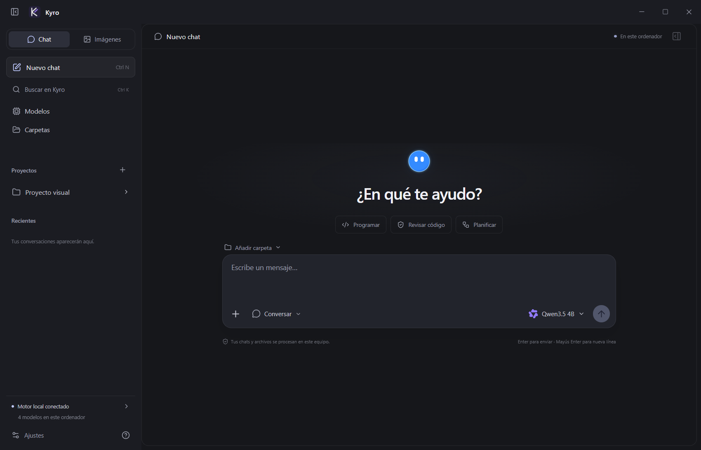
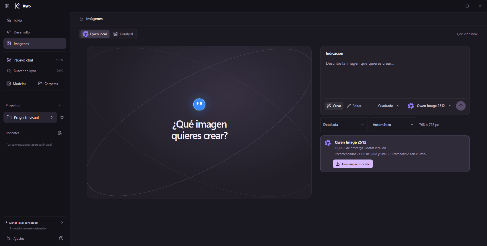

Qwen3.5
Para conversar, escribir y trabajar con código. Disponible en varios tamaños.
Conversa, trabaja sobre tus carpetas y crea imágenes con modelos que se ejecutan en tu PC.

Elige el modelo desde el cuadro de mensaje. Usa Conversar para consultas, Planificar para organizar una tarea o Revisar para examinar un proyecto.
Empezar un chatConsulta archivos y referencias junto al chat. Programar guarda los cambios en las carpetas autorizadas, con confirmación configurable y opción de deshacer.
Abrir un proyecto
Describe lo que buscas, usa una imagen de referencia en Editar y cambia de modelo desde el compositor. Guarda el resultado en PNG.
Elegir motor
Kyro detecta CPU, RAM, GPU y espacio en disco. La biblioteca recomienda modelos según tu equipo y permite medir el rendimiento una vez instalados.
Para conversar, escribir y trabajar con código. Disponible en varios tamaños.
Centrado en programación. La versión de 30B requiere más memoria que las opciones pequeñas de la biblioteca.
Alternativa de Mistral para trabajar con código y explorar un proyecto.
Disponible en la biblioteca para tareas generales, razonamiento y planificación.
Usa 2512 para crear desde texto y Qwen Image Edit 2511 para transformar una imagen.
Kyro detecta checkpoints base instalados en ComfyUI para crear y transformar imágenes.
La selección es representativa. Consulta el catálogo de Kyro para ver los tamaños y los requisitos orientativos de cada variante.
Abre Ajustes → Acerca de → Buscar actualizaciones. Kyro verifica el instalador y te deja elegir cuándo abrirlo. Puedes exportar los chats o guardar una copia de la base desde Ajustes → Datos.
Los mensajes y archivos que usas con los modelos locales se procesan en Ollama, Qwen local o ComfyUI en este equipo. Las descargas, las actualizaciones y las funciones de GitHub que actives sí usan Internet.
Sí. El instalador actualiza la instalación anterior en el mismo lugar y conserva tus conversaciones, carpetas, ajustes y modelos.
Para Ollama, ve a Ajustes → Motor local → Carpeta de modelos. ComfyUI gestiona sus propios modelos y sus carpetas de imágenes.
Usa Liberar memoria en la biblioteca cuando el modelo esté inactivo. Sus archivos descargados se conservan.